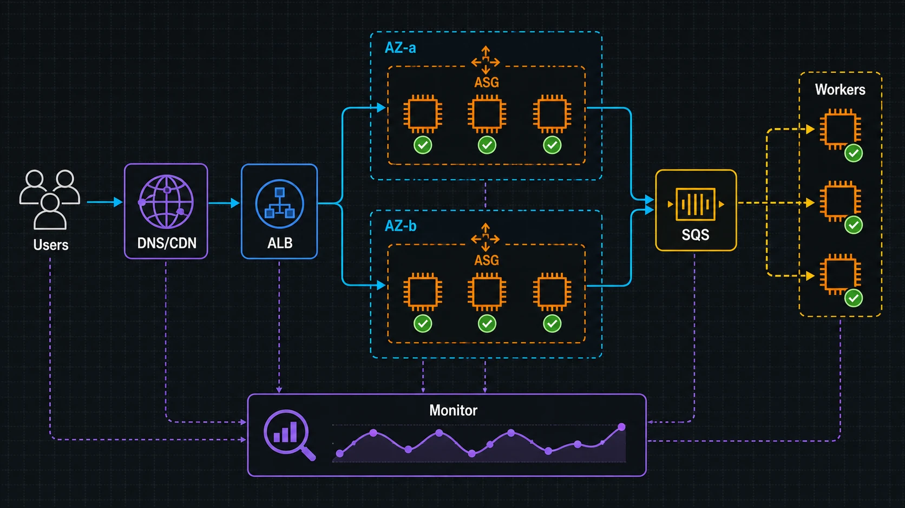

A4. SAA④ 고가용성·아키텍처
한 대가 죽어도 서비스는 살아남게 만드는 설계가 이 장의 핵심입니다. 로드 밸런서·Auto Scaling·다중 AZ로 단일 장애점을 없애고, SQS·SNS로 컴포넌트를 느슨하게 묶으며, Route 53·CloudFront로 전 세계에 안정적으로 전달하고, CloudWatch로 관측하며 재해 복구(DR) 전략으로 마무리합니다. SAA-C03(2026 기준)의 "복원력 있는 아키텍처 설계" 도메인(비중 26%)을 정면으로 다루며, "고성능 아키텍처 설계" 도메인(24%)의 디커플링·캐시 주제와도 직결됩니다.

1. 로드 밸런싱 — ALB vs NLB vs GWLB
고가용성의 1번 부품은 Elastic Load Balancing(ELB)입니다. 트래픽을 여러 AZ의 여러 대상(타깃)으로 나눠 보내고, 헬스 체크에 실패한 대상은 자동으로 제외합니다. 즉 로드 밸런서 자체가 "한 대가 죽어도 서비스는 산다"를 만드는 핵심입니다. 시험에선 어떤 LB를 고르는가가 단골입니다.
💡 비유로 이해하기: 백화점 안내 데스크
입구의 안내 데스크(로드 밸런서)가 손님을 비어 있는 계산대로 보냅니다. 데스크가 "이 계산대는 라면 코너 담당, 저 계산대는 화장품 담당"처럼 요청 내용(경로)을 보고 보내면 ALB(L7), "그냥 줄 짧은 곳으로" 빠르게 보내면 NLB(L4)입니다. 계산대 한 곳이 셔터를 내리면(헬스 체크 실패) 데스크는 더 이상 그쪽으로 손님을 보내지 않습니다.
| 구분 | ALB (Application) | NLB (Network) | GWLB (Gateway) |
|---|---|---|---|
| OSI 계층 | L7 (HTTP/HTTPS) | L4 (TCP/UDP/TLS) | L3/4 (IP 패킷) |
| 라우팅 기준 | 경로·호스트·헤더 기반 | 포트·프로토콜 (초저지연) | 방화벽·IDS 등 가상 어플라이언스로 전달 |
| 대표 강점 | 마이크로서비스·컨테이너 라우팅, WAF 연동 | 초고성능·고정 IP·수백만 RPS | 인라인 보안 검사 체이닝 |
| 고정 IP | 없음(DNS 이름) | AZ별 고정 IP(Elastic IP 지정 가능) | — |
| 이럴 때 | 웹앱, 경로별 다른 서비스 | 게임·금융 등 극저지연, IP 화이트리스트 필요 | 트래픽을 보안 장비로 통과시켜야 할 때 |
📝 시험에 이렇게 나온다
"URL 경로(/api, /img)별로 다른 대상 그룹으로 라우팅" → ALB. "고정 IP가 필요하거나 극도로 낮은 지연·수백만 동시 연결(TCP/UDP)" → NLB. "서드파티 방화벽/IDS 어플라이언스를 인라인으로" → GWLB. 키워드 "HTTP 헤더/호스트 기반"이 보이면 거의 ALB입니다.
2. Auto Scaling — 수요에 맞춰 늘고 주는 그룹
EC2 Auto Scaling Group(ASG)은 부하에 따라 인스턴스 수를 자동으로 늘리고(스케일 아웃) 줄입니다(스케일 인). 단순한 "비용 절감"을 넘어 고가용성 장치입니다. 인스턴스가 죽거나 헬스 체크에 실패하면 ASG가 자동으로 새 인스턴스를 띄워 원하는 용량(Desired Capacity)을 회복하기 때문입니다.
구성 요소를 정리하면 이렇습니다.
| 요소 | 역할 |
|---|---|
| 시작 템플릿(Launch Template) | "어떤 인스턴스를(AMI·타입·보안 그룹·사용자 데이터)" 정의. 구버전 시작 구성(Launch Configuration)보다 권장. |
| Min / Desired / Max | 최소·원하는·최대 인스턴스 수. ASG가 항상 Desired를 유지하려 함. |
| 다중 AZ 분산 | 여러 서브넷(AZ)에 걸쳐 균등 배치 → 한 AZ 장애에도 생존. |
| 헬스 체크 | EC2 상태 + ELB 헬스 체크까지 포함하면 "앱이 죽은" 인스턴스도 교체. |
스케일링 정책은 세 갈래입니다. 동적 조정 중 대상 추적(Target Tracking)은 "평균 CPU 50% 유지"처럼 목표값을 정하면 알아서 맞추는 가장 쉬운 방식이고, 단계 조정(Step)은 임계치 구간별로 더 세밀하게, 예약 조정(Scheduled)은 "매일 9시 트래픽 급증"처럼 시간이 예측될 때 씁니다. 더 나아가 예측 스케일링(Predictive)은 머신러닝으로 미래 부하를 예측해 미리 준비합니다.
💡 비유로 이해하기: 카페 아르바이트 스케줄
손님이 몰리면 사장이 알바를 더 부르고(스케일 아웃), 한가하면 일찍 보냅니다(스케일 인). "오후 12~1시 점심엔 항상 붐빈다"를 알면 미리 인원을 잡아두죠(예약/예측). 알바가 갑자기 그만두면(인스턴스 장애) 즉시 대타를 부르는 것이 바로 ASG의 자동 복구입니다.
✅ 핵심 정리
"ASG를 여러 AZ에 걸쳐 두는 것"이 사실상 기본 설정인 이유 — 한 AZ가 통째로 내려가도 다른 AZ의 인스턴스가 ALB 뒤에서 트래픽을 계속 받기 때문입니다. ALB + 다중 AZ ASG 조합이 SAA 복원력 설계의 정석 패턴입니다.
3. DNS와 라우팅 — Route 53 정책
Amazon Route 53은 관리형 DNS이자 도메인 등록·헬스 체크·트래픽 라우팅까지 묶은 서비스입니다. 고가용성 관점에서 핵심은 라우팅 정책입니다 — 같은 도메인이라도 누가·어디서 물어보느냐에 따라 다른 IP를 돌려줄 수 있습니다.
| 라우팅 정책 | 무엇을 기준으로 | 대표 용도 |
|---|---|---|
| 단순(Simple) | 고정 1개(또는 임의) 응답 | 단일 리소스 |
| 가중치(Weighted) | 비율(예: 90/10)로 분배 | 카나리 배포·A/B 테스트 |
| 지연 시간(Latency) | 가장 지연이 낮은 리전 | 전 세계 사용자에 가장 빠른 리전 연결 |
| 장애 조치(Failover) | 헬스 체크 결과(Primary↔Secondary) | 액티브-패시브 DR |
| 지리(Geolocation) | 사용자의 위치(국가/대륙) | 지역별 콘텐츠·규제 분리 |
| 지리 근접(Geoproximity) | 리소스와의 지리적 거리(편향 bias 조정 가능) | 거리 기반 트래픽 이동 |
| 다중값(Multivalue) | 헬스한 여러 IP를 무작위 반환(최대 8개) | 간이 로드 밸런싱(헬스 체크 포함) |
⚠️ 자주 헷갈리는 함정
지연 시간(빠른 리전) vs 지리(사용자 위치) vs 지리 근접(거리 + bias 조정)을 구분하세요. "한국 사용자는 무조건 서울로" 같은 위치 기반은 Geolocation, "가장 빠른 곳으로"는 Latency입니다. 또 Failover는 Route 53 헬스 체크와 짝지어야 자동 전환이 동작합니다.
📝 시험에 이렇게 나온다
"평소 트래픽의 10%만 새 버전으로" → 가중치. "Primary 리전이 죽으면 DR 리전으로 자동 전환" → 장애 조치 + 헬스 체크. ALB/CloudFront 같은 AWS 리소스를 가리킬 땐 Alias 레코드(쿼리 무료, 루트 도메인 지원)를 쓰는 것이 정답 포인트입니다.
4. 콘텐츠 전송·가속 — CloudFront vs Global Accelerator
전 세계 사용자에게 빠르고 안정적으로 전달하는 두 서비스를 자주 혼동합니다. 결정적 차이는 "캐시하느냐"입니다.
| 구분 | CloudFront (CDN) | Global Accelerator |
|---|---|---|
| 핵심 | 엣지 캐시(콘텐츠를 가까이 보관) | 애니캐스트 IP로 AWS 백본 최단 경로 전달 |
| 캐싱 | O — 정적 콘텐츠를 엣지에 저장 | X — 캐시 없이 트래픽만 가속 |
| 프로토콜 | 주로 HTTP/HTTPS(웹) | TCP/UDP 전반(비-HTTP 포함) |
| IP | 도메인(엣지별 가변) | 고정 애니캐스트 IP 2개 |
| 이럴 때 | 이미지·동영상·웹 자산, S3 오리진 가속 | 게임·VoIP·고정 IP 필요한 TCP/UDP 앱, 빠른 리전 장애 조치 |
CloudFront에서 S3 오리진을 보호할 때는 OAC(Origin Access Control)를 씁니다. 버킷을 퍼블릭으로 열지 않고 CloudFront만 접근하도록 막아, 사용자는 반드시 CDN을 거치게 합니다(구버전 OAI를 대체).
💡 비유로 이해하기: 동네 편의점 vs 전용 고속도로
CloudFront는 인기 상품을 동네 편의점(엣지)에 미리 갖다 놓아 멀리 본사 창고까지 안 가게 합니다. Global Accelerator는 물건을 미리 두진 않지만, 본사까지 가는 길을 막히지 않는 전용 고속도로(AWS 백본)로 바꿔 더 빠르고 안정적으로 도착하게 합니다.
📝 시험에 이렇게 나온다
"정적 콘텐츠 캐싱·웹사이트 가속·S3와 함께" → CloudFront(+ OAC). "고정 IP가 필요한 비-HTTP(TCP/UDP) 앱을 전 세계에서 빠르게" 또는 "리전 간 빠른 장애 조치" → Global Accelerator. 둘 다 DDoS 완화를 위해 AWS Shield와 함께 자주 등장합니다.
5. 디커플링 — SQS · SNS · EventBridge · Kinesis
컴포넌트를 직접 호출로 묶으면 하나가 느려질 때 전체가 무너집니다. 중간에 메시징 계층을 두어 느슨하게 연결(디커플)하면, 생산자와 소비자가 서로의 속도·장애에 덜 영향받습니다. 어떤 도구를 쓰느냐는 SAA 단골 비교입니다.
| 서비스 | 모델 | 핵심 성질 | 이럴 때 |
|---|---|---|---|
| SQS | 큐 (1:1 소비) | 버퍼·완충, 풀(pull) 방식, 메시지 보존 | 주문 처리·작업 큐로 부하 완충 |
| SNS | 펍/섭 (1:N 팬아웃) | 푸시(push), 여러 구독자에 동시 전달 | 한 이벤트를 여러 시스템에 알림 |
| EventBridge | 이벤트 버스·라우팅 | 규칙·필터로 라우팅, SaaS·스케줄 연동 | 이벤트 기반 통합·필터링 라우팅 |
| Kinesis | 스트리밍 | 순서 보존·재처리·다수 컨슈머, 대용량 실시간 | 로그·클릭스트림·IoT 실시간 분석 |
SQS는 다시 둘로 나뉩니다. 표준(Standard)은 거의 무제한 처리량에 최소 1회 전달·순서 미보장(중복 가능), FIFO는 정확히 1회·순서 보장이지만 처리량이 제한됩니다. 처리하지 못한 메시지는 DLQ(Dead-Letter Queue)로 빼 격리하고, 가시성 타임아웃(Visibility Timeout) 동안에는 다른 소비자가 같은 메시지를 못 보게 해 중복 처리를 줄입니다.
💡 비유로 이해하기: 식당 주문 전표
홀(생산자)이 주방(소비자)에 대고 직접 외치면 바쁠 때 엉킵니다. 대신 주문 전표를 꽂이(SQS 큐)에 끼워두면 주방이 처리 가능한 속도로 하나씩 가져갑니다(완충). "VIP 입장!"을 홀·주방·발렛에 동시에 방송(SNS 팬아웃)할 수도 있죠. 전표가 자꾸 실패하면 '보류함(DLQ)'에 따로 모읍니다.
Resources:
OrderQueue: # 표준 큐 + DLQ 연결
Type: AWS::SQS::Queue
Properties:
VisibilityTimeout: 60 # 처리 중 60초간 다른 소비자에게 숨김
RedrivePolicy:
deadLetterTargetArn: !GetAtt OrderDLQ.Arn
maxReceiveCount: 5 # 5회 실패 시 DLQ로 이동
PaymentQueue: # 논리 ID는 영숫자만 가능(점 불가)
Type: AWS::SQS::Queue
Properties:
QueueName: payment-queue.fifo # FIFO는 큐 이름이 .fifo 로 끝나야 함
FifoQueue: true # 순서 보장 + 정확히 1회
ContentBasedDeduplication: true📝 시험에 이렇게 나온다
"순서·중복 제거가 필수(결제·금융)" → SQS FIFO. "한 이벤트를 여러 구독자에 동시 전달" → SNS 팬아웃(SNS→여러 SQS 패턴도 빈출). "이벤트 규칙으로 필터·라우팅, SaaS/스케줄" → EventBridge. "실시간 스트림·재처리·순서(로그/클릭스트림)" → Kinesis. "처리 실패 메시지를 잃지 않고 격리" → DLQ.
6. 관측성 — CloudWatch · CloudTrail · Config
고가용성은 "보여야" 지킵니다. 세 서비스가 자주 헷갈리는데, "무엇을 관측하느냐"로 깔끔히 갈립니다.
| 서비스 | 무엇을 | 한 줄 요약 |
|---|---|---|
| CloudWatch | 지표·로그·알람 (성능/상태) | "지금 잘 돌아가나?" — CPU·지연·에러율 모니터링, 알람으로 Auto Scaling 트리거 |
| CloudTrail | API 호출 기록 (감사) | "누가 무엇을 했나?" — 계정 활동·보안 감사 로그 |
| AWS Config | 리소스 구성·변경 (준수) | "설정이 규칙에 맞나?" — 구성 변경 추적·컴플라이언스 평가 |
💡 비유로 이해하기: 매장 운영의 세 장부
CloudWatch는 매대 온도·재고 수량을 실시간으로 보는 계기판(이상하면 알람), CloudTrail은 "누가 몇 시에 금고를 열었나"를 적는 출입 일지, Config는 "소화기는 규정대로 비치됐나"를 점검하는 안전 점검표입니다.
📝 시험에 이렇게 나온다
"누가 이 리소스를 삭제했는지 추적" → CloudTrail. "지표 임계치를 넘으면 알람·자동 확장" → CloudWatch(Alarm). "보안 그룹이 규정에 어긋나게 변경되면 감지" → AWS Config(규칙). 셋을 같이 쓰는 게 정석이며, 키워드 "감사(audit)"는 CloudTrail로 직결됩니다.
7. Well-Architected와 재해 복구(DR)
마지막은 설계를 평가하는 틀과 최악을 대비하는 전략입니다. AWS Well-Architected Framework는 6대 기둥으로 아키텍처를 점검합니다.
| 기둥 | 핵심 질문 |
|---|---|
| 운영 우수성(Operational Excellence) | 운영·배포·관측을 코드로 자동화했는가 |
| 보안(Security) | 최소 권한·암호화·추적이 되는가 |
| 안정성(Reliability) | 장애에서 자동 복구되고 수요에 맞춰 확장되는가 |
| 성능 효율성(Performance Efficiency) | 적절한 리소스를 선택·진화시키는가 |
| 비용 최적화(Cost Optimization) | 불필요한 지출 없이 가치를 내는가 |
| 지속 가능성(Sustainability) | 자원·에너지 영향을 줄였는가 |
재해 복구(DR)는 RTO(복구 목표 시간 — 얼마나 빨리 복구)와 RPO(복구 목표 시점 — 얼마만큼의 데이터 손실 허용)를 기준으로 4전략 중 하나를 고릅니다. 오른쪽으로 갈수록 RTO·RPO는 짧아지지만 비용이 커지는 트레이드오프입니다.
| 전략 | 대기 상태 | RTO/RPO | 비용 |
|---|---|---|---|
| 백업 & 복원(Backup & Restore) | 백업만 보관, 평소 인프라 없음 | 가장 김(시간 단위) | 가장 저렴 |
| 파일럿 라이트(Pilot Light) | 핵심(DB 복제 등)만 최소로 가동 | 김(분~시간) | 낮음 |
| 웜 스탠바이(Warm Standby) | 축소판 전체를 항상 가동(스케일다운) | 짧음(분) | 중간 |
| 멀티 사이트 액티브-액티브(Multi-Site) | 양쪽 풀 가동·동시 처리 | 거의 0 | 가장 높음 |
📝 시험에 이렇게 나온다
"비용 최소, 복구 시간은 길어도 됨" → 백업 & 복원. "RTO 수 분, 무중단에 가깝게(돈은 더 써도)" → 웜 스탠바이 또는 멀티 사이트. "DB만 복제해 두고 평소 컴퓨트는 최소" → 파일럿 라이트. RTO/RPO 수치가 작아질수록 더 비싼 전략을 고르는 트레이드오프를 묻습니다.
📋 한 장 요약
| 문제 키워드 | 정답 서비스/개념 |
|---|---|
| 경로·호스트 기반 HTTP 라우팅 | ALB(L7) |
| 고정 IP·극저지연 TCP/UDP | NLB(L4) |
| 인스턴스 자동 복구·다중 AZ 확장 | EC2 Auto Scaling(ASG) |
| 리전 장애 자동 전환(DNS) | Route 53 장애 조치 + 헬스 체크 |
| 정적 콘텐츠 캐싱·CDN | CloudFront(+ OAC) |
| 고정 IP·비-HTTP 전 세계 가속 | Global Accelerator |
| 주문/작업 완충·디커플 | SQS(표준), 순서·중복제거면 FIFO |
| 한 이벤트를 여러 시스템에 | SNS 팬아웃 |
| 실시간 스트림·재처리 | Kinesis |
| "누가 무엇을 했나" 감사 | CloudTrail |
| 구성 변경·컴플라이언스 | AWS Config |
| 지표·알람·자동 확장 트리거 | CloudWatch |
| 비용 최소 DR / 거의 무중단 DR | 백업&복원 / 멀티 사이트 |